3 Chemical bonding
Electronegativity, bonding, shapes and intermolecular forces
3 Chemical bonding
本章对应 CIE 9701 AS Chemistry 的 Chemical bonding。内容覆盖 electronegativity、ionic bonding、metallic bonding、covalent and coordinate bonding、shapes of molecules、intermolecular forces、bond properties 以及 dot-and-cross diagrams。
Learning objectives
学完本章后，你应该能够：
- define electronegativity and explain trends across a period and down a group;
- describe ionic, metallic, covalent and coordinate bonding;
- explain how bonding and structure determine physical properties;
- draw dot-and-cross diagrams for atoms, ions, molecules and polyatomic ions;
- use electron-pair repulsion to predict molecular shapes and bond angles;
- distinguish sigma and pi bonds;
- explain London dispersion forces, permanent dipole forces and hydrogen bonding;
- relate bond polarity, bond length and bond energy to electronegativity and atomic size.
3.1 Electronegativity and bond polarity
Electronegativity
Electronegativity is the ability of an atom to attract the bonding pair of electrons in a covalent bond.
Across a period, electronegativity generally increases because nuclear charge increases while the bonding electrons remain in the same principal shell. Atomic radius decreases and the attraction for the bonding pair becomes stronger.
Down a group, electronegativity generally decreases because the bonding pair is further from the nucleus and more inner shells shield the nuclear charge.
Fluorine is the most electronegative element in the usual CIE scale. The noble gases are normally omitted because they do not commonly form covalent bonds in the AS syllabus.
Bond polarity and dipoles
If two bonded atoms have different electronegativities, the bonding electrons are attracted more strongly to one atom. The more electronegative atom carries a partial negative charge, \(\delta-\), and the other atom carries a partial positive charge, \(\delta+\).
The C–H bond is treated as approximately non-polar at this level. C–O, C–F and C–Cl bonds are polar with the carbon atom as \(\delta+\) and the more electronegative atom as \(\delta-\).
Bond polarity is not the same as molecular polarity. A molecule can contain polar bonds but have no overall dipole if the bond dipoles cancel because of its symmetrical shape, as in \(\ce{CO2}\).
3.2 Ionic bonding
Formation of ions and ionic lattices
An ionic bond is the strong electrostatic attraction between oppositely charged ions. A metal atom forms a positive ion by losing one or more outer-shell electrons; a non-metal atom forms a negative ion by gaining electrons.
The ions arrange themselves in a giant three-dimensional lattice. Each ion is surrounded by oppositely charged ions, so the attraction acts in all directions. The formula of an ionic compound gives the simplest whole-number ratio of ions that makes the compound electrically neutral.
Examples:
| Ions | Formula |
|---|---|
| \(\ce{Na+}\) and \(\ce{Cl-}\) | \(\ce{NaCl}\) |
| \(\ce{Mg^{2+}}\) and \(\ce{Cl-}\) | \(\ce{MgCl2}\) |
| \(\ce{Al^{3+}}\) and \(\ce{O^{2-}}\) | \(\ce{Al2O3}\) |
| \(\ce{Ca^{2+}}\) and \(\ce{PO4^{3-}}\) | \(\ce{Ca3(PO4)2}\) |
Properties of ionic compounds
Ionic compounds usually have high melting and boiling points because many strong electrostatic attractions must be overcome.
They do not conduct electricity when solid because the ions are fixed in position. They conduct when molten or dissolved in water because the ions are then mobile.
An ionic crystal is brittle. When a layer shifts, ions of the same charge can become adjacent and repel strongly, causing the crystal to split.
3.3 Metallic bonding
Metallic structure
Metallic bonding is the strong electrostatic attraction between a lattice of positive metal ions and a sea of delocalised electrons. The outer electrons are not associated with one particular atom and can move through the structure.
Metals conduct electricity because delocalised electrons carry charge. They conduct heat because mobile electrons transfer energy rapidly through the lattice.
Metallic bonding is non-directional. Layers of metal ions can slide while the attraction to the delocalised electrons remains, so metals are malleable and ductile.
Alloys
An alloy contains atoms of different elements. The different-sized atoms distort the layers of the metal lattice and make it more difficult for the layers to slide. Alloys are therefore usually harder than pure metals.
Increasing the number of delocalised electrons or increasing the charge density of the metal ions generally strengthens metallic bonding, although the exact properties depend on the alloy structure.
3.4 Covalent and coordinate bonding
Covalent bonding
A covalent bond is the strong electrostatic attraction between a shared pair of electrons and the nuclei of the bonded atoms. A single covalent bond contains one shared pair; a double bond contains two shared pairs and a triple bond contains three shared pairs.
The shared pair is formed by overlap of atomic orbitals. A sigma (\(\sigma\)) bond is formed by end-on overlap along the line joining the nuclei. A pi (\(\pi\)) bond is formed by sideways overlap of parallel p orbitals and has electron density above and below the internuclear axis.
A double bond contains one \(\sigma\) bond and one \(\pi\) bond. A triple bond contains one \(\sigma\) bond and two \(\pi\) bonds.
Coordinate (dative covalent) bonding
A coordinate bond is a covalent bond in which both electrons in the shared pair come from the same atom. The donor must have a lone pair and the acceptor must have an empty orbital or be electron-deficient.
Examples include:
\[\ce{NH3 + H+ -> NH4+}\]
\[\ce{H2O + H+ -> H3O+}\]
The bond is represented by an arrow from the donor atom to the acceptor atom. Once formed, a coordinate bond behaves like an ordinary covalent bond.
Bond length and bond energy
A shorter covalent bond is generally stronger and has a greater bond energy. Between the same two elements, bond length decreases and bond energy increases in the order single bond < double bond < triple bond.
Down a group, larger atoms usually form longer, weaker bonds because the bonding pair is further from the nuclei. A large electronegativity difference increases bond polarity but does not by itself mean that a bond is fully ionic.
3.5 Shapes of molecules
Electron-pair repulsion
Electron pairs around a central atom repel one another and arrange themselves as far apart as possible. Lone pairs repel more strongly than bonding pairs because their electron density is concentrated closer to the central atom.
The repulsion order is:
\[\text{lone pair--lone pair} > \text{lone pair--bond pair} > \text{bond pair--bond pair}\]
Multiple bonds are treated as one region of electron density, but they repel slightly more strongly than a single bond.
| Electron regions around central atom | Shape | Typical angle |
|---|---|---|
| 2 bonding pairs | linear | \(180^\circ\) |
| 3 bonding pairs | trigonal planar | \(120^\circ\) |
| 4 bonding pairs | tetrahedral | \(109.5^\circ\) |
| 3 bonding pairs + 1 lone pair | trigonal pyramidal | about \(107^\circ\) |
| 2 bonding pairs + 2 lone pairs | bent / V-shaped | about \(104.5^\circ\) |
| 5 bonding pairs | trigonal bipyramidal | \(90^\circ\) and \(120^\circ\) |
| 6 bonding pairs | octahedral | \(90^\circ\) |
Examples include \(\ce{CO2}\) linear, \(\ce{BF3}\) trigonal planar, \(\ce{CH4}\) tetrahedral, \(\ce{NH3}\) trigonal pyramidal and \(\ce{H2O}\) bent.
3.6 Intermolecular forces and bond properties
London dispersion forces
London dispersion forces arise from temporary fluctuations in electron density. A temporary dipole can induce a dipole in a neighbouring particle.
They act between all atoms and molecules. They become stronger when there are more electrons and a larger, more easily polarised electron cloud. Long molecules can also have stronger dispersion forces because they have a larger contact surface.
Permanent dipole forces
Polar molecules have permanent partial charges. The \(\delta+\) end of one molecule attracts the \(\delta-\) end of another. Permanent dipole–permanent dipole forces are stronger than dispersion forces for molecules of similar size.
The overall dipole depends on both bond polarity and molecular shape. The polar bonds in \(\ce{CO2}\) cancel, whereas the polar bonds in \(\ce{H2O}\) do not.
Hydrogen bonding
Hydrogen bonding is a particularly strong permanent dipole attraction. It occurs when hydrogen is covalently bonded to N, O or F and is attracted to a lone pair on N, O or F in a neighbouring molecule.
Hydrogen bonding explains the relatively high boiling point of water and the high solubility of small alcohols and ammonia in water. It also contributes to the high surface tension of water.
Comparing physical properties
Boiling a molecular substance involves overcoming intermolecular forces, not breaking the covalent bonds inside each molecule. Larger molecules often have higher boiling points because their dispersion forces are stronger.
For molecules with similar size, a polar molecule generally has a higher boiling point than a non-polar molecule. Hydrogen bonding usually gives the largest increase among the intermolecular forces in this syllabus.
3.7 Dot-and-cross diagrams
A reliable drawing method
- Count the total valence electrons, adjusting for the charge of an ion.
- Choose a central atom; hydrogen is never central and the least electronegative suitable atom is usually central.
- Add single bonds and complete the outer atoms’ octets.
- Place remaining electrons on the central atom.
- If the central atom lacks an octet, form multiple bonds where appropriate.
- Put brackets around a polyatomic ion and write its charge outside the bracket.
In a dot-and-cross diagram, dots and crosses distinguish electrons contributed by different atoms. A shared pair must contain two electrons, while a lone pair remains on one atom.
Worked example · Ammonium ion
Formation of \(\ce{NH4+}\)
Ammonia has a lone pair on nitrogen. The hydrogen ion has no electrons. The lone pair is donated to \(\ce{H+}\) to form a coordinate bond, giving four N–H bonds and an overall \(1+\) charge.
The nitrogen atom has no lone pair remaining in \(\ce{NH4+}\), and the ion is drawn in square brackets with the charge outside.
Chapter checklist
Multiple choice questions
3 Chemical bonding - Multiple Choice: Easy
Question 1 · Coordinate bonding · 1.3 Choice Easy Q1
Original question page · 1.3 Choice Easy Q1

Phosphine, \(\ce{PH3}\), reacts with a hydrogen ion to form \(\ce{PH4+}\). Which type of bond is formed between P and H in this reaction?
Show explanation
B. The lone pair on phosphorus is donated to the electron-deficient \(\ce{H+}\) ion.
Question 2 · Bonding in iodine and silver · 1.3 Choice Easy Q2
Original question page · 1.3 Choice Easy Q2

Which forces act between neighbouring iodine molecules in solid iodine and between particles in solid silver?
Show explanation
D. \(\ce{I2}\) molecules are held together by London forces; silver has a lattice of metal ions and delocalised electrons.
Question 3 · More than one type of bonding · 1.3 Choice Easy Q3
Original question page · 1.3 Choice Easy Q3
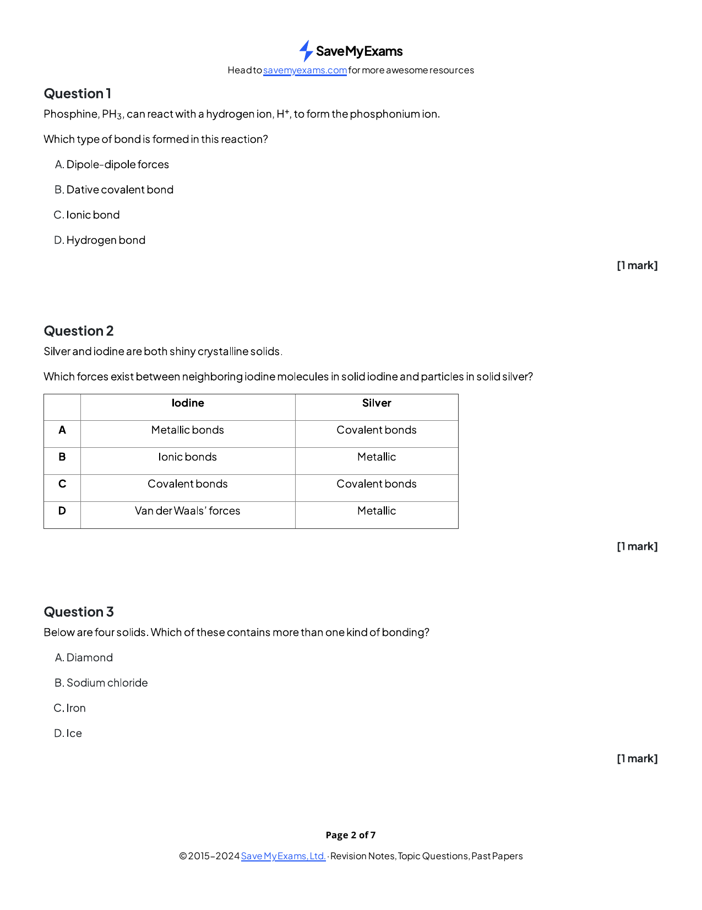
Which solid contains more than one type of bonding?
Show explanation
D. Ice contains covalent bonds within water molecules and hydrogen bonds between molecules.
Question 4 · Shape of hydrazine · 1.3 Choice Easy Q4
Original question page · 1.3 Choice Easy Q4
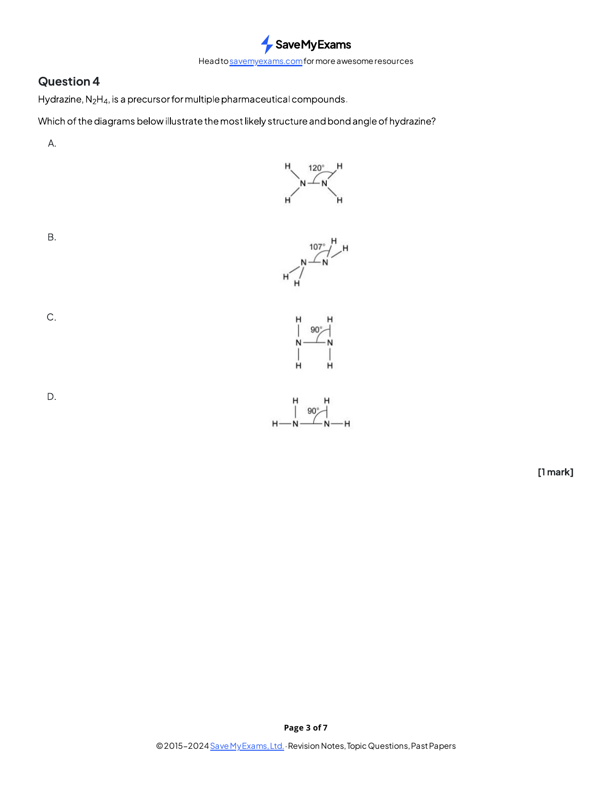
What is the shape around each nitrogen atom in hydrazine, \(\ce{N2H4}\)?
Show explanation
B. Each N has three bonding pairs and one lone pair. Lone-pair repulsion reduces the tetrahedral angle to about \(107^\circ\).
Question 5 · Bond dipoles · 1.3 Choice Easy Q5
Original question page · 1.3 Choice Easy Q5
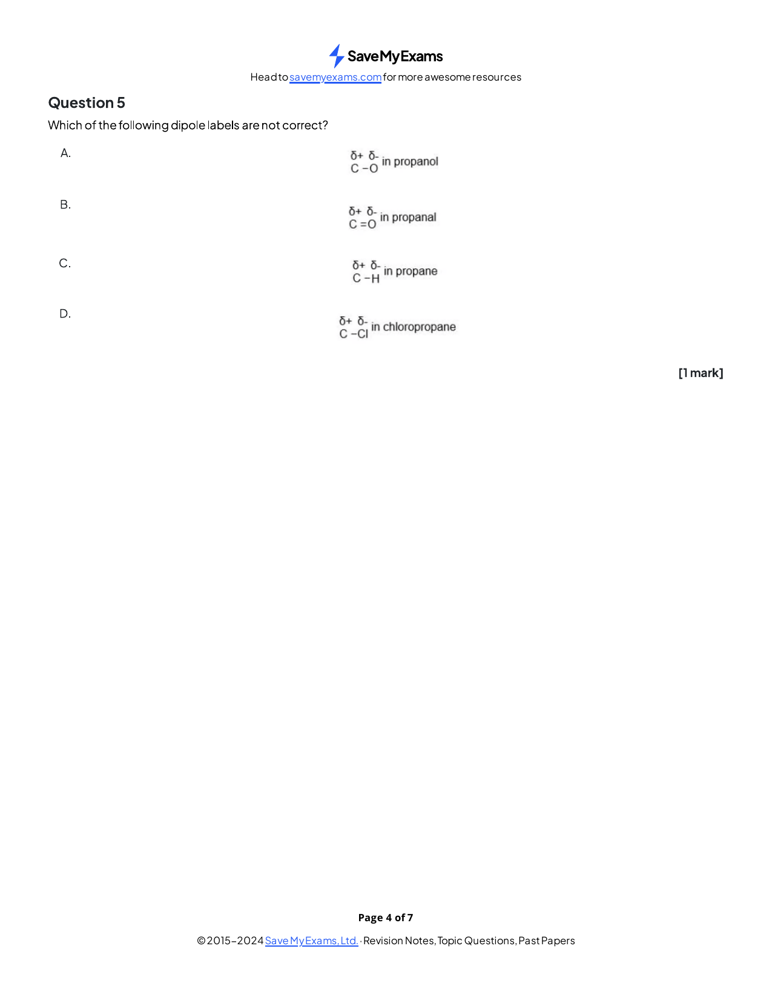
Which bond polarity assignment is not correct?
Show explanation
C. Carbon is slightly more electronegative than hydrogen, so the C–H bond is treated as approximately non-polar rather than with H as \(\delta-\).
Question 6 · Formation of ammonium · 1.3 Choice Easy Q6
Original question page · 1.3 Choice Easy Q6
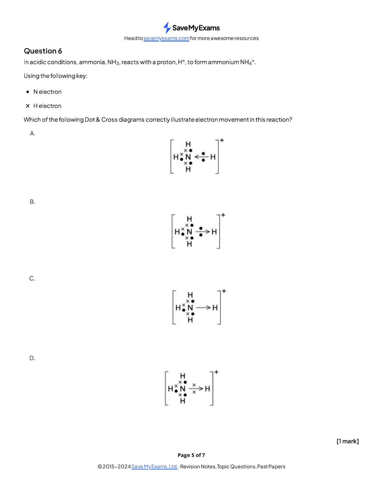
Which statement correctly describes the formation of \(\ce{NH4+}\) from \(\ce{NH3}\) and \(\ce{H+}\)?
Show explanation
B. The N lone pair forms the fourth N–H coordinate bond.
Question 7 · Shapes of boron compounds · 1.3 Choice Easy Q7
Original question page · 1.3 Choice Easy Q7

What are the shapes around boron in \(\ce{BF3}\) and \(\ce{BH4-}\)?
Show explanation
C. \(\ce{BF3}\) has three bonding pairs; \(\ce{BH4-}\) has four.
Question 8 · Electronegativity trend · 1.3 Choice Easy Q8
Original question page · 1.3 Choice Easy Q8

Which atom is most electronegative?
Show explanation
A. Electronegativity decreases down Group 17, so chlorine is more electronegative than bromine.
Question 9 · Ionic or covalent · 1.3 Choice Easy Q9
Original question page · 1.3 Choice Easy Q9
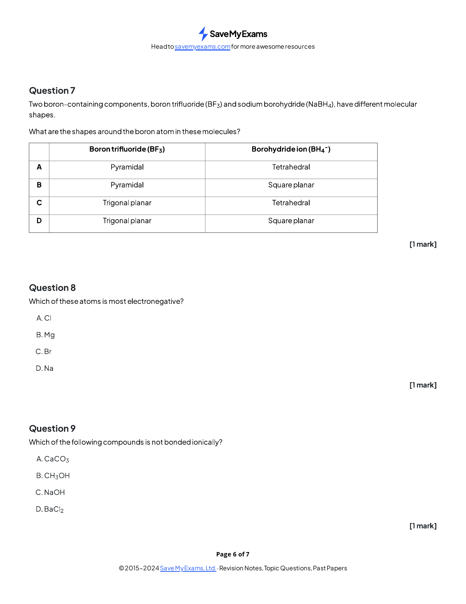
Which compound is not an ionic compound?
Show explanation
B. Methanol is a molecular covalent substance. The other compounds contain ions, even though carbonate or hydroxide also contain covalent bonds internally.
Question 10 · Metallic bonding definition · 1.3 Choice Easy Q10
Original question page · 1.3 Choice Easy Q10

Which statement describes metallic bonding?
Show explanation
D. This is the definition of metallic bonding.
Question 11 · Number of bonding types · 1.3 Choice Easy Q11
Original question page · 1.3 Choice Easy Q11

Which material contains only one main type of bonding in its solid structure?
Show explanation
B. Brass is an alloy with metallic bonding. Graphite, ice and iodine have bonding within particles plus intermolecular attractions.
Question 12 · Hydrolysis of silicon tetrachloride · 1.3 Choice Easy Q12
Original question page · 1.3 Choice Easy Q12
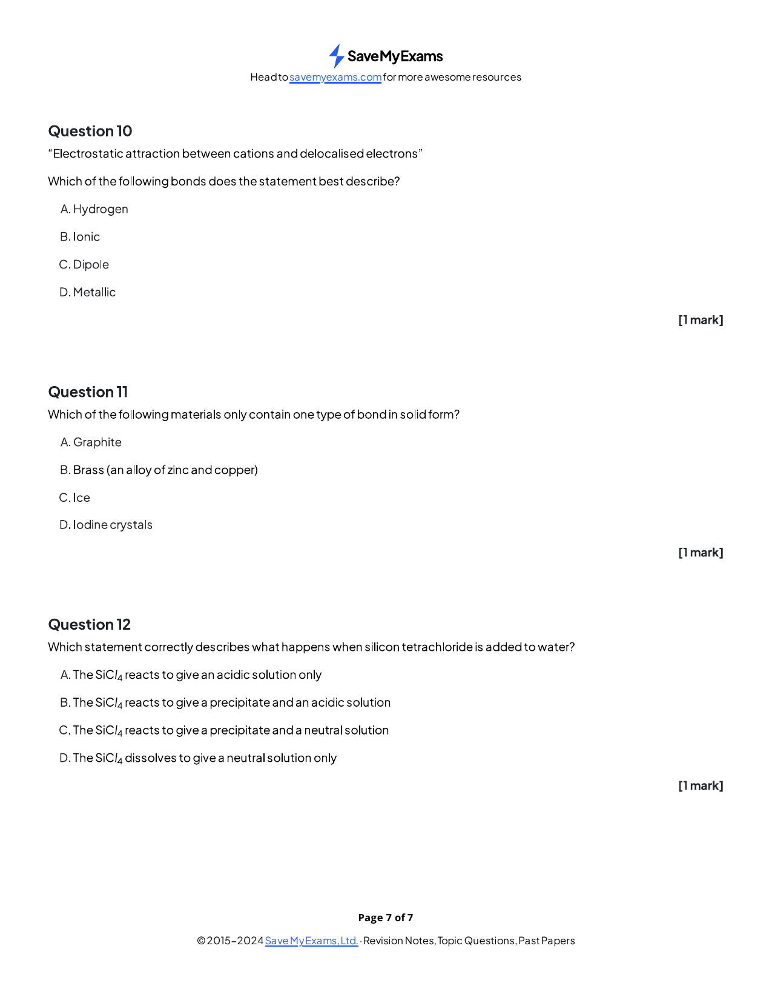
What happens when \(\ce{SiCl4}\) is added to water?
Show explanation
B. Hydrolysis forms solid \(\ce{SiO2}\) and hydrochloric acid.
3 Chemical bonding - Multiple Choice: Medium
Question 15 · Equilibrium and molecular shape · 1.3 Choice Medium Q1
Original question page · 1.3 Choice Medium Q1

For \(\ce{PCl5(g) <=> PCl3(g) + Cl2(g)}\), the percentage yield of \(\ce{PCl3}\) increases from 13% at \(160^\circ\mathrm{C}\) to 100% at \(300^\circ\mathrm{C}\). What is correct?
Show explanation
C. Higher temperature favours the endothermic forward reaction. \(\ce{PCl3}\) has three bonds and one lone pair, giving a pyramidal shape.
Question 16 · Bonding in nitrogen · 1.3 Choice Medium Q2
Original question page · 1.3 Choice Medium Q2
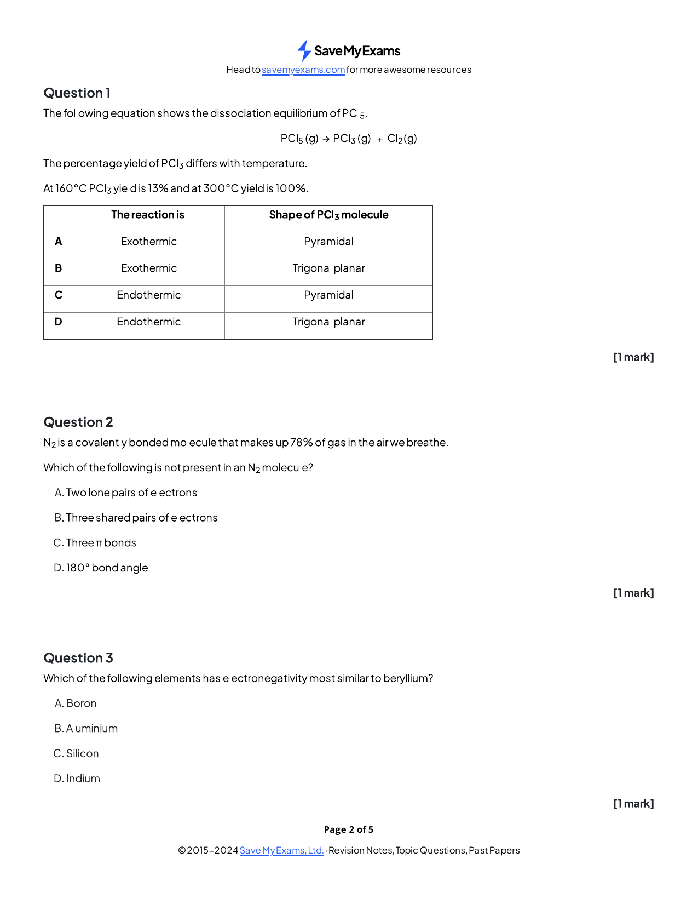
Which feature is not present in a nitrogen molecule, \(\ce{N2}\)?
Show explanation
C. A triple bond contains one \(\sigma\) bond and two \(\pi\) bonds.
Question 18 · Lone pairs on a central atom · 1.3 Choice Medium Q4
Original question page · 1.3 Choice Medium Q4
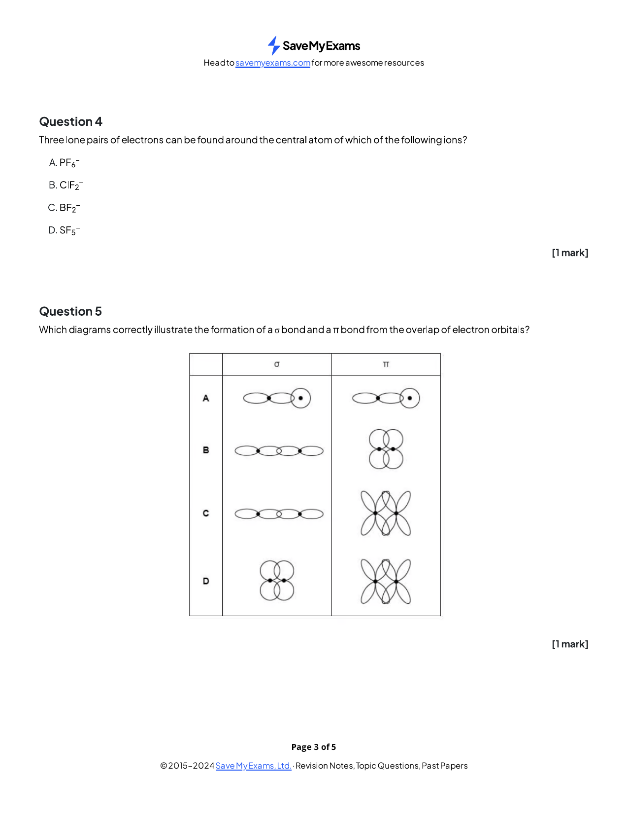
Which ion has three lone pairs around its central atom?
Show explanation
B. In \(\ce{ClF2-}\), chlorine has two bonding pairs and three lone pairs.
Question 19 · London forces only · 1.3 Choice Medium Q5
Original question page · 1.3 Choice Medium Q5

Which change of state involves overcoming only London dispersion forces?
Show explanation
B. Carbon dioxide is non-polar and has no permanent dipole or hydrogen bonding.
Question 20 · Cyanate ion · 1.3 Choice Medium Q6
Original question page · 1.3 Choice Medium Q6

What is the formula of the cyanate ion in ammonium cyanate?
Show explanation
C. Ammonium cyanate is \(\ce{NH4OCN}\) and contains the cyanate ion \(\ce{OCN-}\), written here as \(\ce{CNO-}\).
Question 21 · Bond comparison in hydrogen halides · 1.3 Choice Medium Q7
Original question page · 1.3 Choice Medium Q7
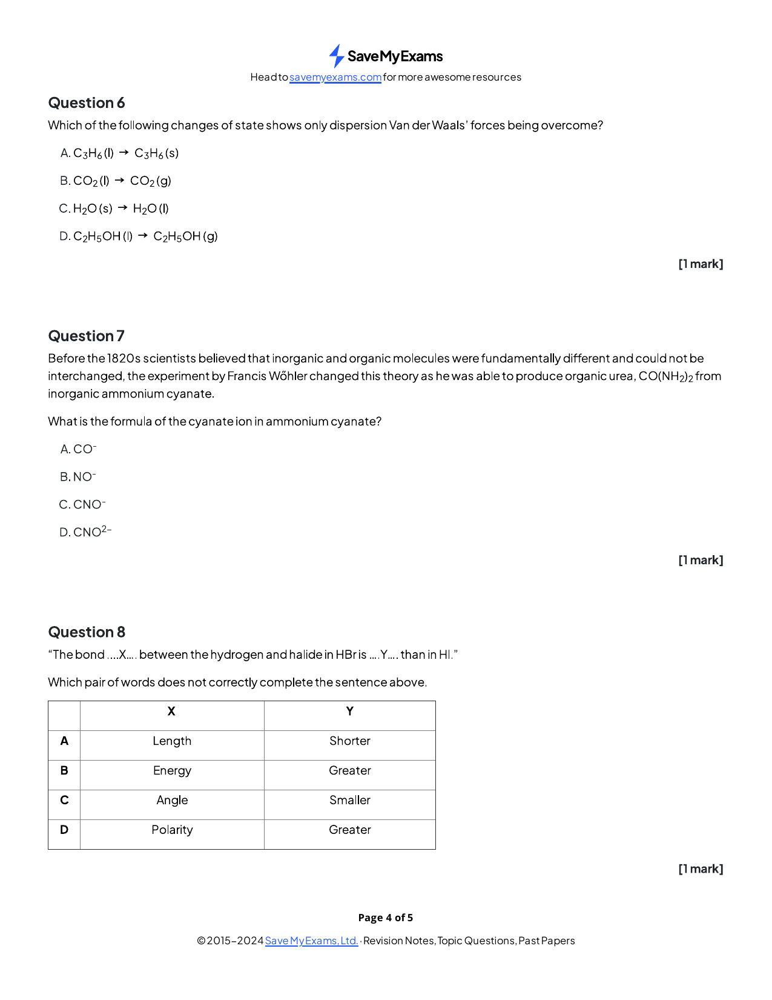
Which pair of words does not correctly complete the statement: “The bond ___ between H and the halogen in HBr is ___ than in HI”?
Show explanation
C. Hydrogen halides are diatomic, so a bond angle is not defined.
Question 23 · Sigma and pi bonds · 1.3 Choice Medium Q9
Original question page · 1.3 Choice Medium Q9
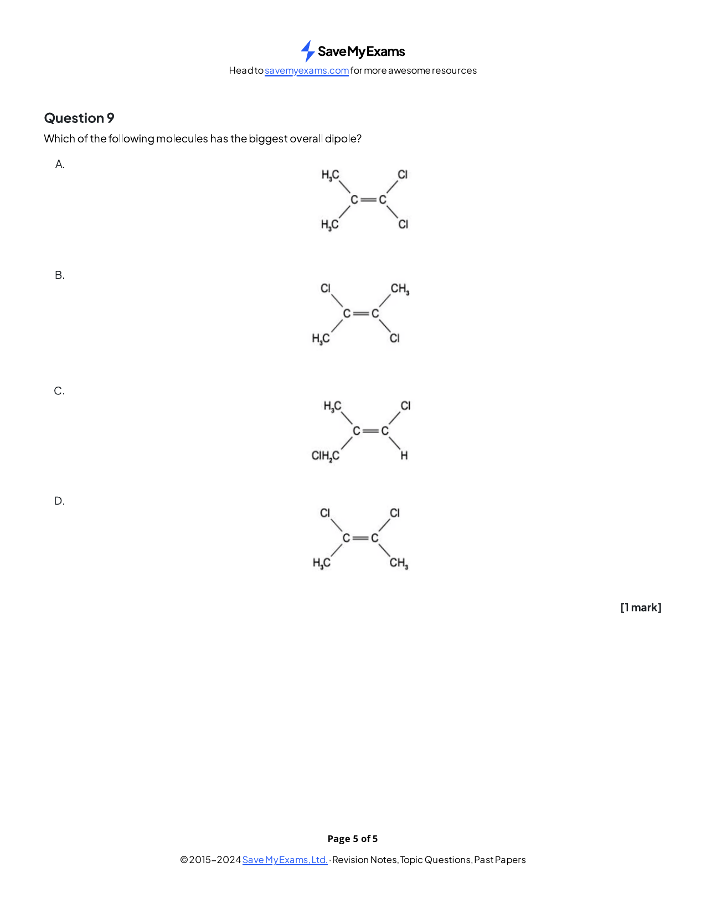
How many \(\sigma\) and \(\pi\) bonds are in ethene, \(\ce{C2H4}\)?
Show explanation
B. There are four C–H \(\sigma\) bonds and one C–C \(\sigma\) bond, plus one C–C \(\pi\) bond.
3 Chemical bonding - Multiple Choice: Hard
Question 28 · Hydrogen bonding with methanal · 1.3 Choice Hard Q1
Original question page · 1.3 Choice Hard Q1

Hydrogen bonding occurs between liquid methanal, \(\ce{HCHO}\), and a second liquid \(Y\). Which substance is most likely to be \(Y\)?
Show explanation
B. Methanol has an O–H hydrogen-bond donor and oxygen lone pairs; the carbonyl oxygen of methanal can accept the hydrogen bond.
Question 29 · Bond energy down a group · 1.3 Choice Hard Q2
Original question page · 1.3 Choice Hard Q2
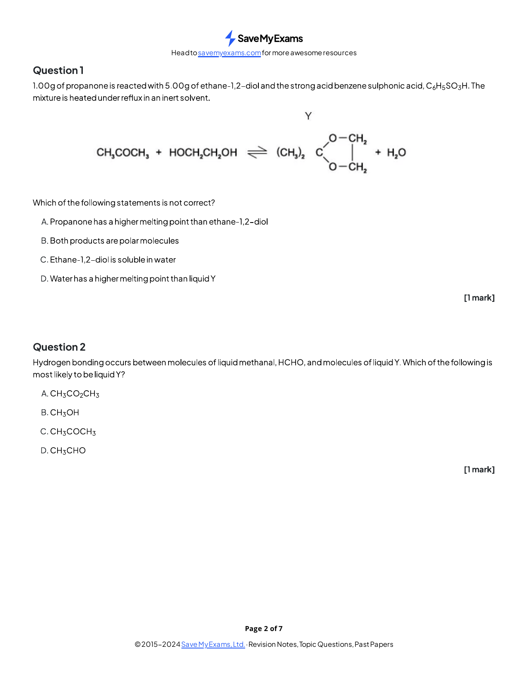
Why does the rate of hydrolysis of \(\ce{R-Cl}\), \(\ce{R-Br}\) and \(\ce{R-I}\) generally increase from chlorine to iodine?
Show explanation
C. The larger iodine atom forms a longer, weaker R–I bond that breaks more readily.
Question 30 · Electronegativity and covalent bonding · 1.3 Choice Hard Q3
Original question page · 1.3 Choice Hard Q3
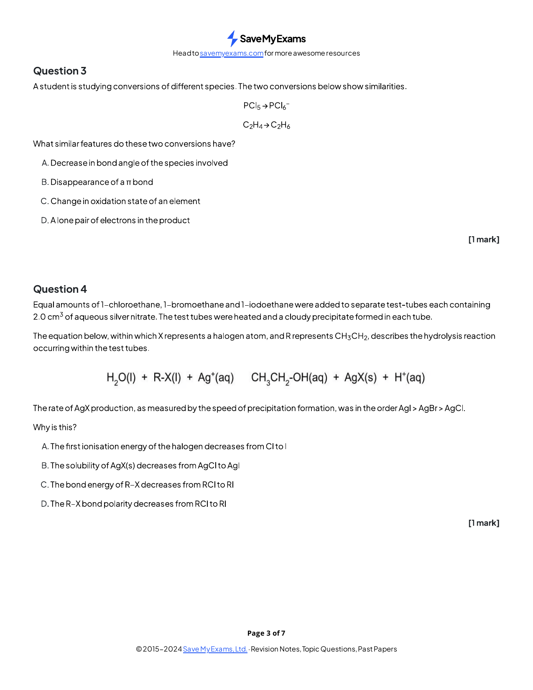
Which atom is most likely to form a covalent bond with fluorine rather than an ionic bond, based on the smallest electronegativity difference?
Show explanation
A. Hydrogen has the closest electronegativity to fluorine among the options, so the H–F bond is covalent and strongly polar.
Question 31 · Dipoles in molecules · 1.3 Choice Hard Q4
Original question page · 1.3 Choice Hard Q4

Which description of dipoles in \(\ce{CHCl3}\) and \(\ce{Br2}\) is correct?
Show explanation
D. \(\ce{CHCl3}\) is polar, while symmetrical \(\ce{Br2}\) is non-polar but still has temporary dipoles.
Question 32 · Ionic lattice and bonding types · 1.3 Choice Hard Q5
Original question page · 1.3 Choice Hard Q5
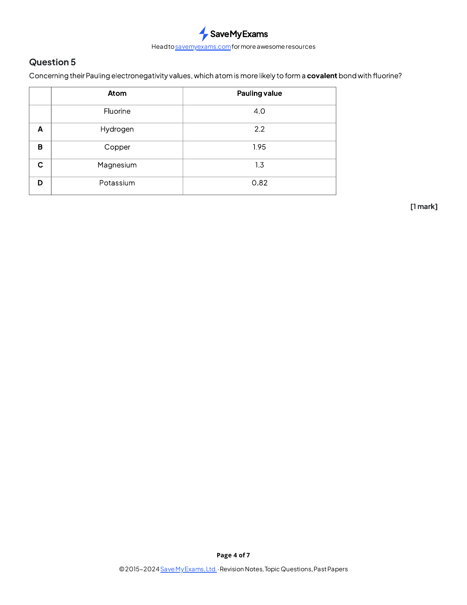
Hydroxyapatite contains calcium, hydroxide and phosphate ions. Which statement is correct?
Show explanation
C. Similar-sized ions can occupy similar lattice sites; the bonding between calcium/strontium ions and anions is ionic.
Question 33 · Conductivity and lattice structure · 1.3 Choice Hard Q6
Original question page · 1.3 Choice Hard Q6
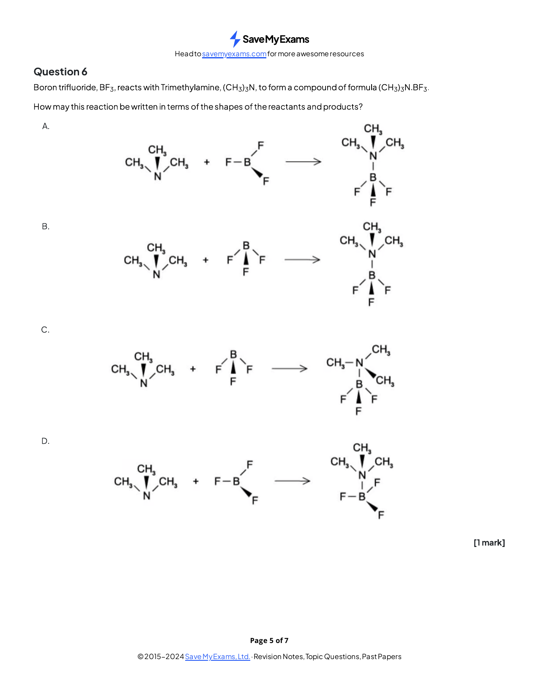
Which substance is expected to have a high melting point and conduct electricity when molten but not when solid?
Show explanation
A. Strong ionic attractions give a high melting point; mobile ions in the molten state carry charge.
Question 34 · Expanded electron-pair arrangement · 1.3 Choice Hard Q7
Original question page · 1.3 Choice Hard Q7

What is the shape of \(\ce{PF6-}\)?
Show explanation
D. Six bonding pairs around phosphorus repel to an octahedral arrangement.
Question 35 · Hydrogenation of an alkene · 1.3 Choice Hard Q8
Original question page · 1.3 Choice Hard Q8
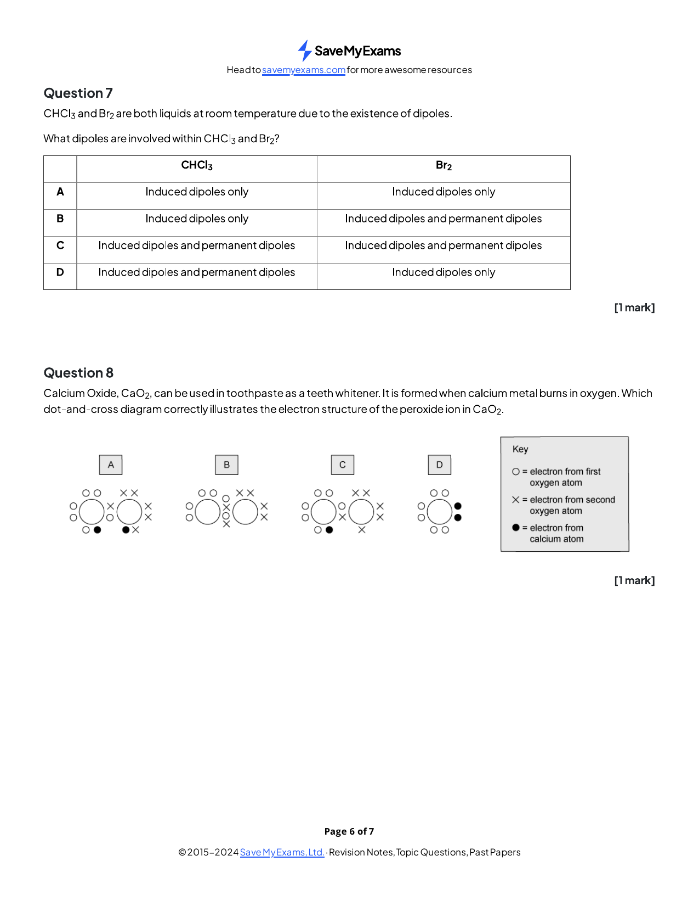
Which feature disappears when \(\ce{C2H4}\) is converted to \(\ce{C2H6}\) by hydrogenation?
Show explanation
B. Hydrogen adds across the double bond, converting the \(\pi\) component into two new C–H bonds.
Question 36 · Overall dipole and symmetry · 1.3 Choice Hard Q9
Original question page · 1.3 Choice Hard Q9
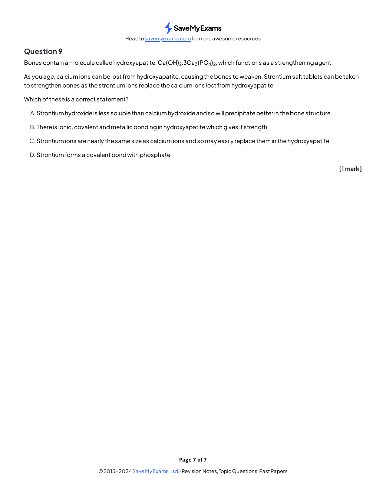
Which molecule has the largest overall dipole?
Show explanation
B. The tetrahedral \(\ce{CH2Cl2}\) molecule is not symmetrical enough for its bond dipoles to cancel.
Structured questions
3 Chemical bonding - Structured Questions: Easy
Example 1 · Intermolecular forces · 1.3 SQ Easy Q1
Original question page · 1.3 SQ Easy Q1
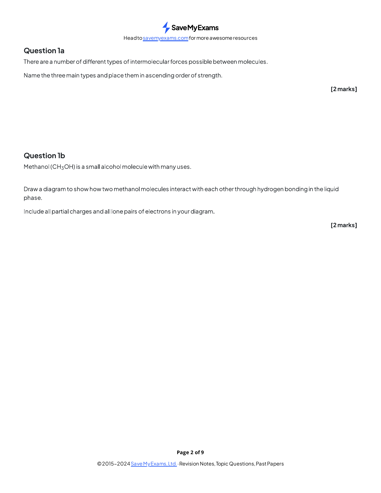
(a) Name the three main types of intermolecular force and arrange them in increasing order of strength. [2 marks]
(b) Methanol, \(\ce{CH3OH}\), is a small polar molecule. Describe how two methanol molecules form a hydrogen bond. Include the partial charges and the lone pair involved. [3 marks]
Show mark scheme / model answer
- (a) London dispersion forces, permanent dipole–permanent dipole forces, hydrogen bonds, in that order.
- (b) Oxygen is \(\delta-\) and the O–H hydrogen is \(\delta+\). The \(\delta+\) hydrogen is attracted to a lone pair on the oxygen atom of a neighbouring molecule. A hydrogen bond is shown as a dashed line.
Example 2 · Hydrogen bonding in water and ammonia · 1.3 SQ Easy Q2
Original question page · 1.3 SQ Easy Q2
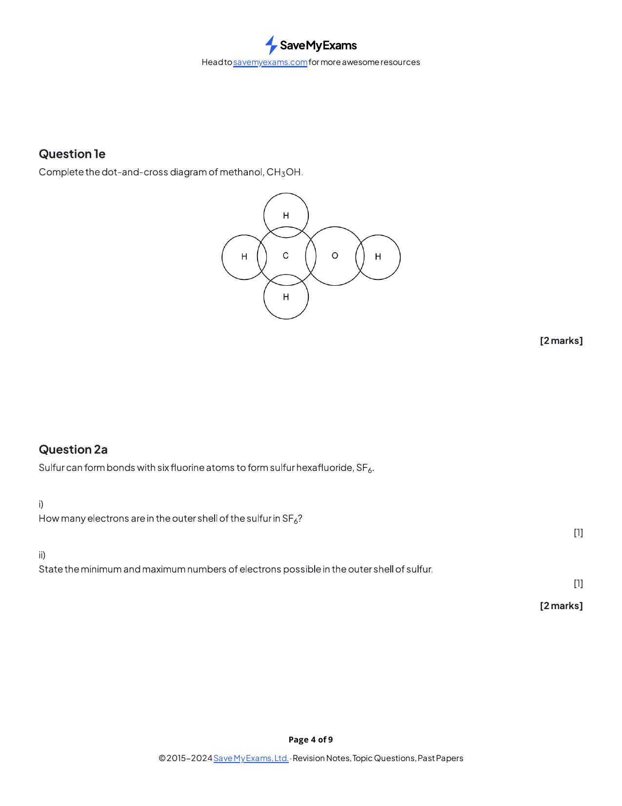
Ammonia is very soluble in water.
(a) State why ammonia is polar. [2 marks]
(b) Describe two possible hydrogen bonds between one water molecule and one ammonia molecule. [4 marks]
(c) State one physical property of ammonia caused by its polarity. [1 mark]
Show mark scheme / model answer
- (a) N–H bonds are polar and the molecule is trigonal pyramidal, so the bond dipoles do not cancel.
- (b) A water \(\delta+\) H can hydrogen-bond to the lone pair on N; an ammonia \(\delta+\) H can hydrogen-bond to a lone pair on O. Partial charges and the dashed attractions must be shown correctly.
- (c) It is soluble in water, or has a higher boiling point than a similar non-polar molecule.
Example 3 · Dot-and-cross diagrams · 1.3 SQ Easy Q3
Original question page · 1.3 SQ Easy Q3
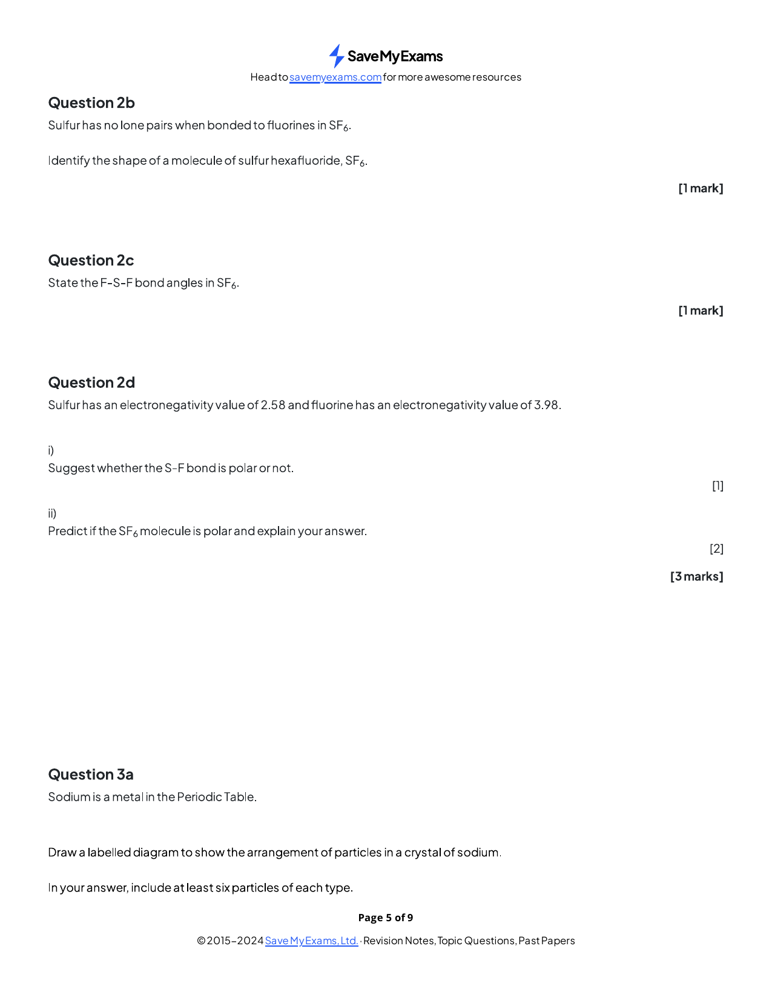
Draw dot-and-cross diagrams for \(\ce{H2}\), \(\ce{Cl2}\) and \(\ce{HCl}\).
(a) Show the bonding pair and all lone pairs. [3 marks]
(b) Explain why the H–Cl bond is polar. [2 marks]
Show mark scheme / model answer
- (a) Each molecule must have one shared pair. \(\ce{H2}\) has no lone pairs; each chlorine in \(\ce{Cl2}\) has three lone pairs; chlorine in \(\ce{HCl}\) has three lone pairs.
- (b) Chlorine is more electronegative than hydrogen, so the bonding pair is closer to chlorine, giving \(\ce{H^{\delta+}-Cl^{\delta-}}\).
Example 4 · Shapes and bond angles · 1.3 SQ Easy Q4
Original question page · 1.3 SQ Easy Q4
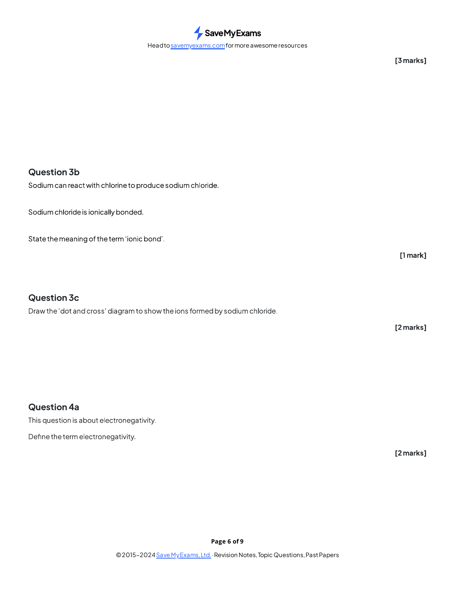
For each species, state the number of bonding pairs, number of lone pairs on the central atom, shape and approximate bond angle: \(\ce{CO2}\), \(\ce{BF3}\), \(\ce{CH4}\), \(\ce{NH3}\) and \(\ce{H2O}\). [10 marks]
Show mark scheme / model answer
- \(\ce{CO2}\): 2 regions, 0 lone pairs, linear, \(180^\circ\).
- \(\ce{BF3}\): 3 bonding pairs, 0 lone pairs, trigonal planar, \(120^\circ\).
- \(\ce{CH4}\): 4 bonding pairs, 0 lone pairs, tetrahedral, \(109.5^\circ\).
- \(\ce{NH3}\): 3 bonding pairs, 1 lone pair, trigonal pyramidal, about \(107^\circ\).
- \(\ce{H2O}\): 2 bonding pairs, 2 lone pairs, bent, about \(104.5^\circ\).
Example 5 · Ionic bonding and physical properties · 1.3 SQ Easy Q5
Original question page · 1.3 SQ Easy Q5
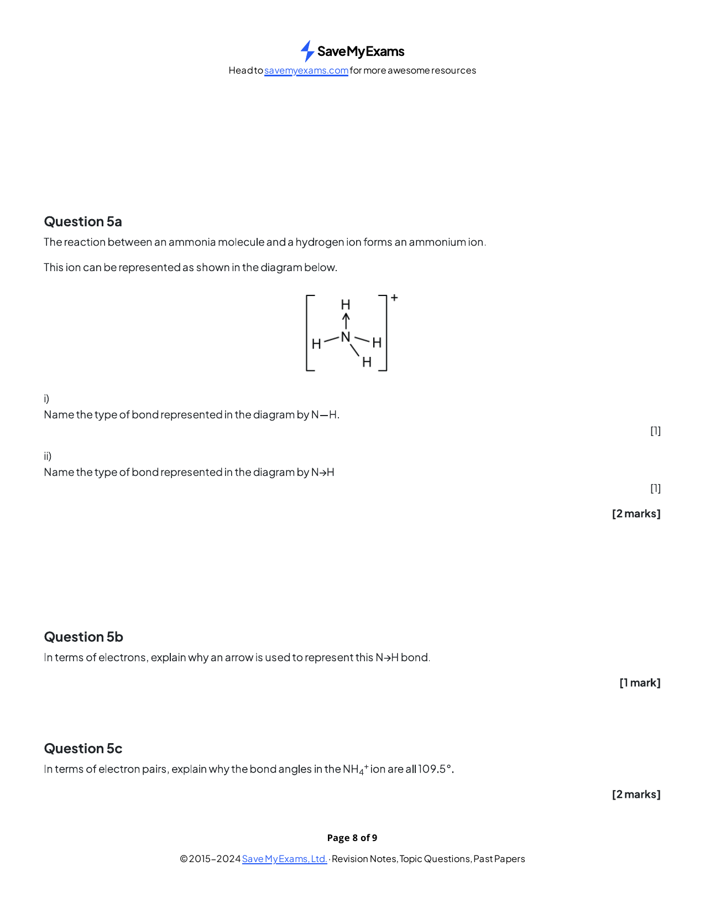
Sodium chloride is a giant ionic lattice.
(a) Describe the structure of solid sodium chloride. [2 marks]
(b) Explain why solid sodium chloride does not conduct electricity but molten sodium chloride does. [2 marks]
(c) Explain why sodium chloride has a high melting point. [1 mark]
Show mark scheme / model answer
- (a) A regular three-dimensional lattice of oppositely charged \(\ce{Na+}\) and \(\ce{Cl-}\) ions; each ion is surrounded by ions of opposite charge.
- (b) Solid ions are fixed, whereas molten ions are mobile and can carry charge.
- (c) Strong electrostatic attractions between oppositely charged ions require much energy to overcome.
3 Chemical bonding - Structured Questions: Medium
Example 8 · Equilibrium and shape of \(\ce{PCl3}\) · 1.3 SQ Medium Q1
Original question page · 1.3 SQ Medium Q1
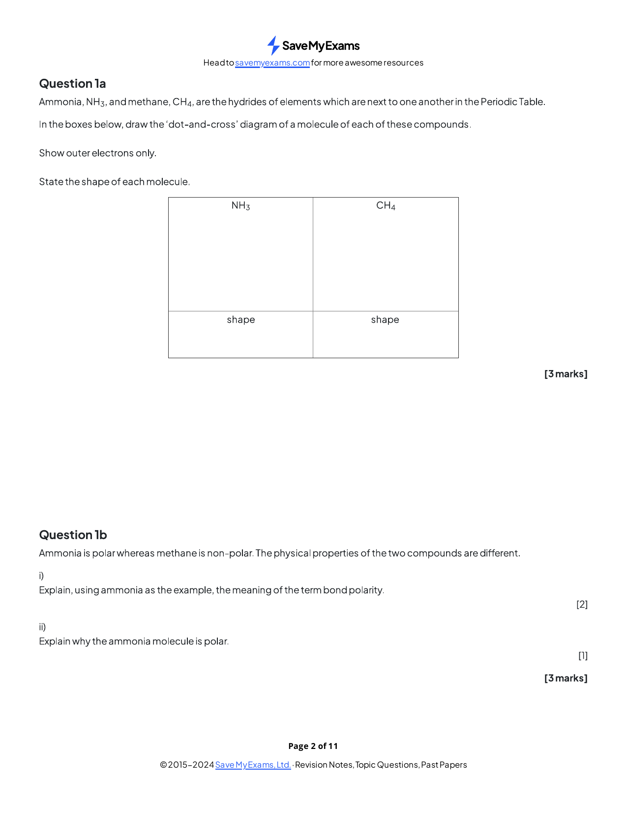
The equilibrium is:
\[\ce{PCl5(g) <=> PCl3(g) + Cl2(g)}\]
The yield of \(\ce{PCl3}\) increases as temperature increases.
(a) State whether the forward reaction is endothermic or exothermic and explain. [2 marks]
(b) State the shape and bond angle around phosphorus in \(\ce{PCl3}\). [2 marks]
(c) Explain why the bond angle is less than \(109.5^\circ\). [2 marks]
Show mark scheme / model answer
- (a) Endothermic; increasing temperature shifts equilibrium in the endothermic direction and increases the product yield.
- (b) Trigonal pyramidal; approximately \(107^\circ\).
- (c) There are three bonding pairs and one lone pair. Lone-pair–bond-pair repulsion is stronger than bond-pair–bond-pair repulsion and compresses the angle.
Example 9 · Polarity and properties of ammonia · 1.3 SQ Medium Q2
Original question page · 1.3 SQ Medium Q2
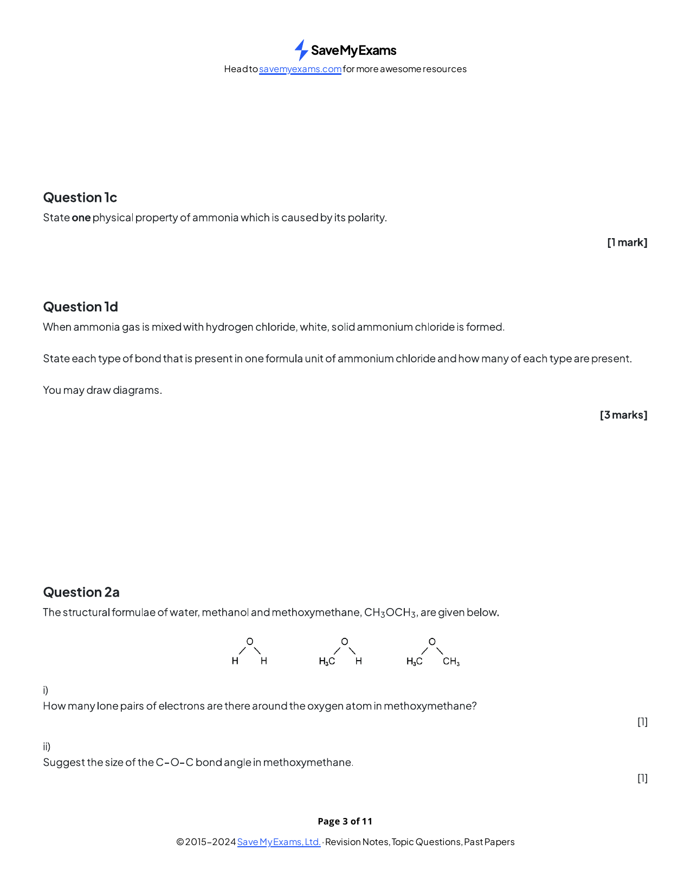
(a) Explain the meaning of bond polarity using ammonia as an example. [2 marks]
(b) Explain why the ammonia molecule is polar. [1 mark]
(c) State one physical property of ammonia caused by its polarity. [1 mark]
Show mark scheme / model answer
- (a) Nitrogen is more electronegative than hydrogen, so the shared electron pair in each N–H bond is displaced towards N, giving partial charges.
- (b) Ammonia is trigonal pyramidal, so the three N–H bond dipoles do not cancel.
- (c) High solubility in water, or a relatively high boiling point compared with a similar non-polar molecule.
Example 10 · Bonding in ammonium chloride · 1.3 SQ Medium Q3
Original question page · 1.3 SQ Medium Q3
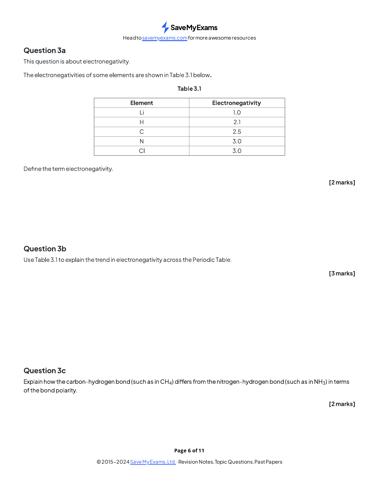
When ammonia gas reacts with hydrogen chloride, solid ammonium chloride forms.
(a) State the types of bond present within one formula unit of \(\ce{NH4Cl}\). [3 marks]
(b) State how many of each bond type are present if the coordinate bond is shown separately. [3 marks]
Show mark scheme / model answer
- (a) Ionic attraction between \(\ce{NH4+}\) and \(\ce{Cl-}\); covalent N–H bonds within ammonium; one of the N–H bonds is coordinate.
- (b) One ionic attraction type, four N–H covalent bonds in the ammonium ion, with one formed originally as a coordinate bond. The coordinate bond is chemically equivalent to the other N–H bonds after formation.
Example 11 · Surface tension and hydrogen bonding · 1.3 SQ Medium Q4
Original question page · 1.3 SQ Medium Q4
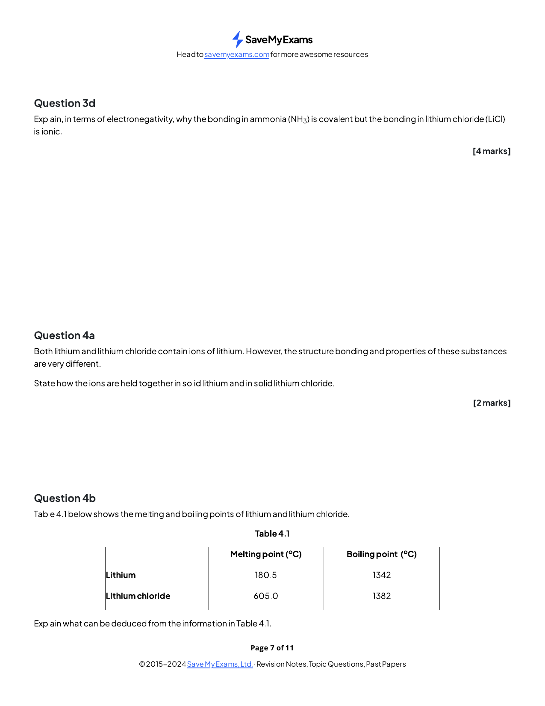
A paperclip can float on water, but sinks after a small amount of soap is added.
Explain both observations in terms of intermolecular forces. [3 marks]
Show mark scheme / model answer
Water has high surface tension caused by hydrogen bonding between water molecules. The surface can support the paperclip if it is placed carefully. Soap disrupts the hydrogen-bond network and lowers surface tension, so the paperclip sinks.
Example 12 · Comparing boiling points · 1.3 SQ Medium Q5
Original question page · 1.3 SQ Medium Q5
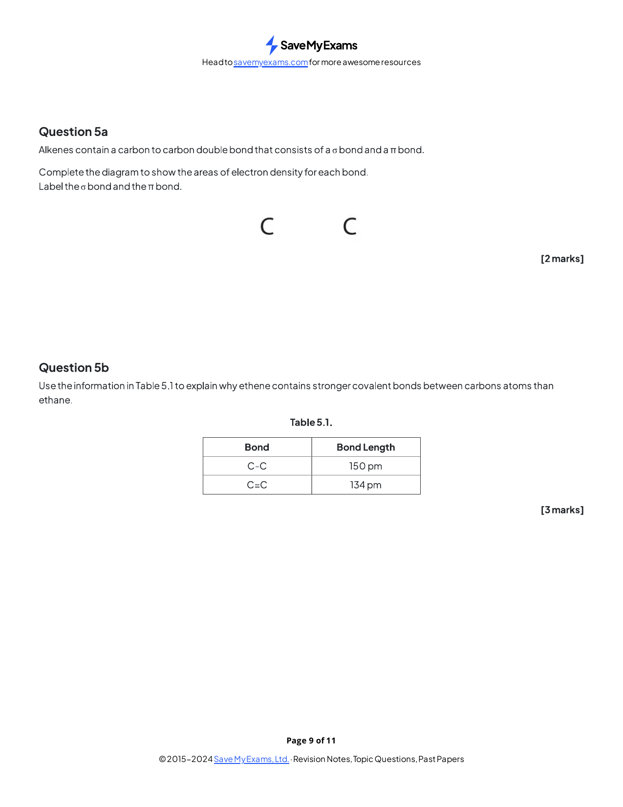
Compare the boiling points of \(\ce{F2}\) and \(\ce{HCl}\).
(a) Identify the intermolecular forces present in each substance. [2 marks]
(b) Predict which has the lower boiling point. [1 mark]
(c) Explain the difference. [3 marks]
Show mark scheme / model answer
- (a) Both have London dispersion forces; HCl also has permanent dipole–permanent dipole forces.
- (b) \(\ce{F2}\) has the lower boiling point.
- (c) HCl has stronger intermolecular attractions because it is polar, so more energy is required to separate its molecules.
3 Chemical bonding - Structured Questions: Hard
Example 14 · Nitrate ion and resonance · 1.3 SQ Hard Q1
Original question page · 1.3 SQ Hard Q1
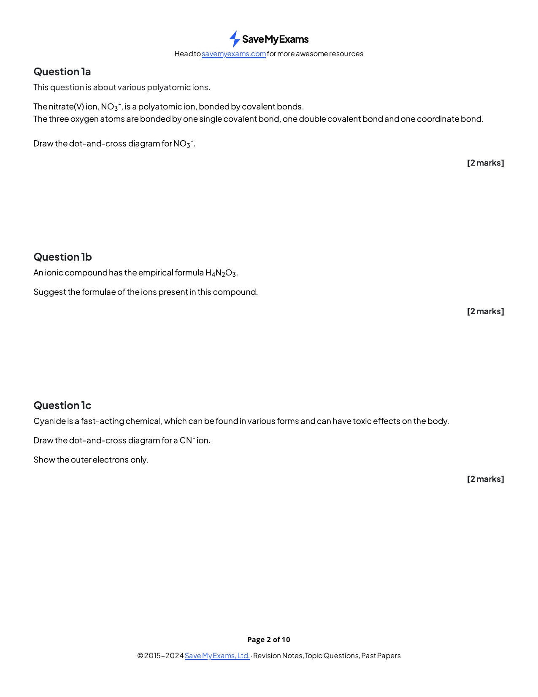
The nitrate ion is \(\ce{NO3-}\).
(a) Calculate the total number of valence electrons in one nitrate ion. [2 marks]
(b) Describe how the electrons are arranged in a valid dot-and-cross structure. [3 marks]
(c) Explain why the three N–O bonds are equivalent in the real ion. [2 marks]
Show mark scheme / model answer
- (a) N contributes 5, three O atoms contribute 18 and the negative charge contributes one: total 24 electrons.
- (b) N is central, three O atoms are attached, the ion is placed in square brackets with a \(1-\) charge, and the octet/charge arrangement is shown correctly. Equivalent resonance structures can be drawn with the double bond in different positions.
- (c) The actual ion is a resonance hybrid; the bonding electrons are delocalised over all three N–O bonds.
Example 15 · Methanamide shape and angles · 1.3 SQ Hard Q2
Original question page · 1.3 SQ Hard Q2
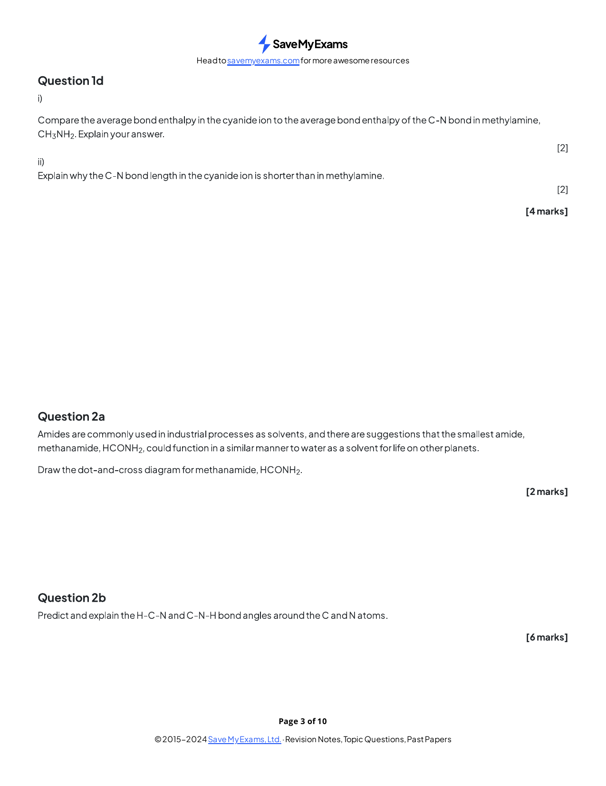
Methanamide has formula \(\ce{HCONH2}\).
(a) State the shape and approximate bond angle around the carbon atom. [2 marks]
(b) State the shape and approximate bond angle around the nitrogen atom. [2 marks]
(c) Explain why the two shapes are different. [2 marks]
Show mark scheme / model answer
- (a) The carbonyl carbon has three regions of electron density, so it is trigonal planar, about \(120^\circ\).
- (b) Nitrogen has three bonding pairs and one lone pair, so it is trigonal pyramidal, about \(107^\circ\).
- (c) The nitrogen lone pair gives four electron regions and stronger lone-pair repulsion; the carbon atom has three regions and no lone pair.
Example 16 · Coordinate bonds and expanded octets · 1.3 SQ Hard Q3
Original question page · 1.3 SQ Hard Q3
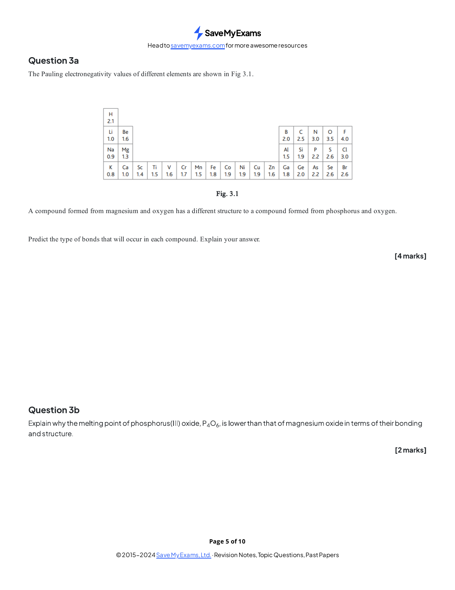
(a) Explain how \(\ce{PCl6-}\) can form from \(\ce{PCl5}\) and \(\ce{Cl-}\). [3 marks]
(b) State the shape of \(\ce{PCl6-}\) and justify it using electron-pair repulsion. [2 marks]
(c) Explain why nitrogen cannot form \(\ce{NCl5}\). [2 marks]
Show mark scheme / model answer
- (a) A lone pair on \(\ce{Cl-}\) is donated to electron-deficient P, forming a coordinate P–Cl bond and the ion \(\ce{PCl6-}\).
- (b) Octahedral; six bonding pairs repel equally and occupy positions as far apart as possible.
- (c) Nitrogen is a Period 2 atom with no available d orbitals and cannot expand its octet beyond eight electrons.
Example 17 · Intermolecular forces between water and ammonia · 1.3 SQ Hard Q4
Original question page · 1.3 SQ Hard Q4
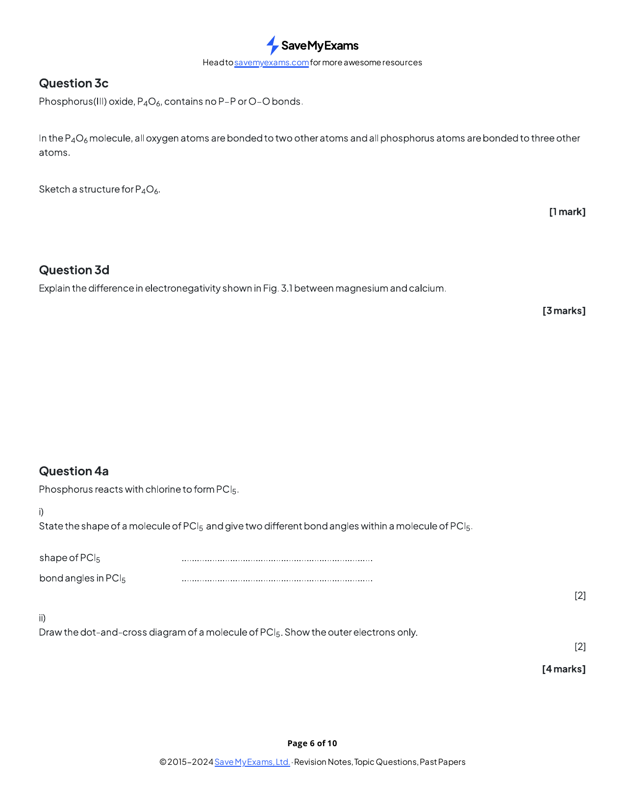
Water and ammonia can form hydrogen bonds with each other.
(a) Draw or describe the partial charges on \(\ce{H2O}\) and \(\ce{NH3}\). [2 marks]
(b) Describe both possible directions of hydrogen bonding between the two molecules. [4 marks]
(c) Explain why these interactions make ammonia highly soluble in water. [2 marks]
Show mark scheme / model answer
- (a) O and N are \(\delta-\); bonded H atoms are \(\delta+\).
- (b) Water H can donate a hydrogen bond to the lone pair on N. Ammonia H can donate a hydrogen bond to a lone pair on O. Both attractions should be shown with dashed lines.
- (c) Strong attractions form between ammonia and water molecules, replacing some water–water and ammonia–ammonia attractions and allowing the molecules to mix.
Example 18 · Solid \(\ce{PCl5}\) and liquid \(\ce{SbCl5}\) · 1.3 SQ Hard Q5
Original question page · 1.3 SQ Hard Q5
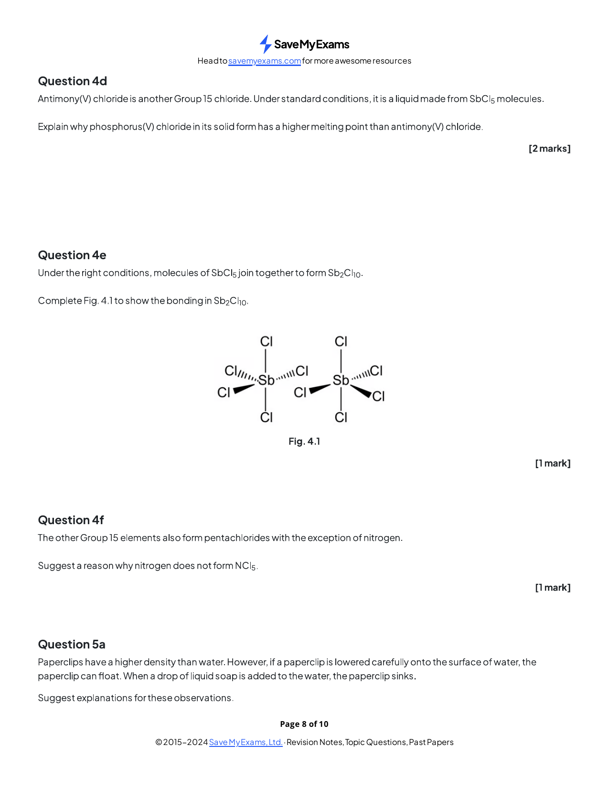
Solid phosphorus(V) chloride has a higher melting point than liquid antimony(V) chloride.
(a) State the particles and bonding in solid \(\ce{PCl5}\). [2 marks]
(b) State the particles and intermolecular forces in liquid \(\ce{SbCl5}\). [2 marks]
(c) Explain the difference in melting points. [3 marks]
Show mark scheme / model answer
- (a) Solid \(\ce{PCl5}\) contains \(\ce{PCl4+}\) and \(\ce{PCl6-}\) ions in a giant ionic lattice with strong ionic attractions.
- (b) Liquid \(\ce{SbCl5}\) contains covalent molecules held together by relatively weak intermolecular forces.
- (c) More energy is needed to overcome strong ionic attractions in solid \(\ce{PCl5}\) than weak intermolecular forces between \(\ce{SbCl5}\) molecules.